Assignment 4: Moving Parts

A cephalopod puppet.
Overview
This week, we made stuff that moved! I made a cephalopod puppet.Materials
- Onshape
- Grasshopper & Rhino
- Adobe Illustrator
- Different types of cardboard
- 1/8th in Delrin (thanks @JoshuaV!!!)
- Laser Cutter
- 3D Printer Filament
- 3D Printer
Ideation
Revisiting the Monterey Bay Aquarium again: there was a temporary exhibit on cephalopods a couple years ago with the theme of robot cephalopods, which is awesome. This class also seems to like cephalopods. A little while back, my coworker had an awesome 3D printed cephalopod on her desk. Clearly, I was going to do something cephalopod-themed this week, so I decided to make a little cephalopod puppet.
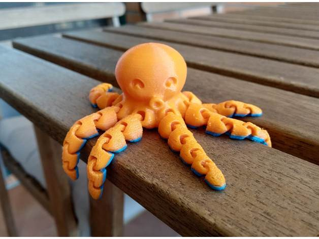
A 3D printed mini octopus from Thingiverse (Source: Thingiverse)
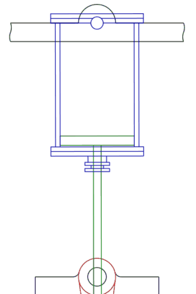
Movement #345 (Source: 507 Movements)
Process
Octopus
I started by 3D printing the mini octopus. Since I didn't design it, it was just a process of trial-and-error until I got the print settings right. I ended up scaling it at 75% and printing at the lowest quality to make it relatively quick.
Movement #345
I designed my mechanism around Movement #345 from 507 Movements. I essentially rebuilt the mechanism without the piston body and with a box to enclose the cam, or "egg thing".
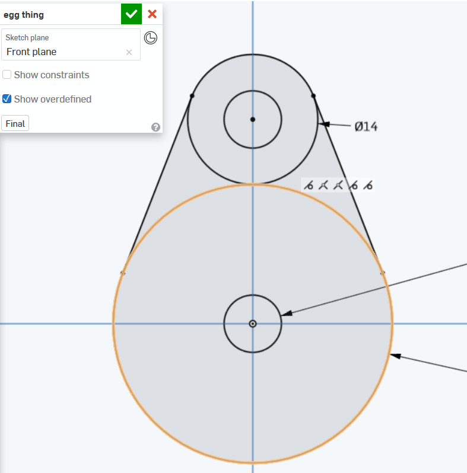
I think this is called a cam but I wasn't sure, so I kept the name as "egg thing"...
Learning Onshape
I found learning Onshape to be relatively straightforward once i got used to the interface. I mostly used rotating mates, as well as a tangent mate to mock the rod sticking through the slot on the top of the box.
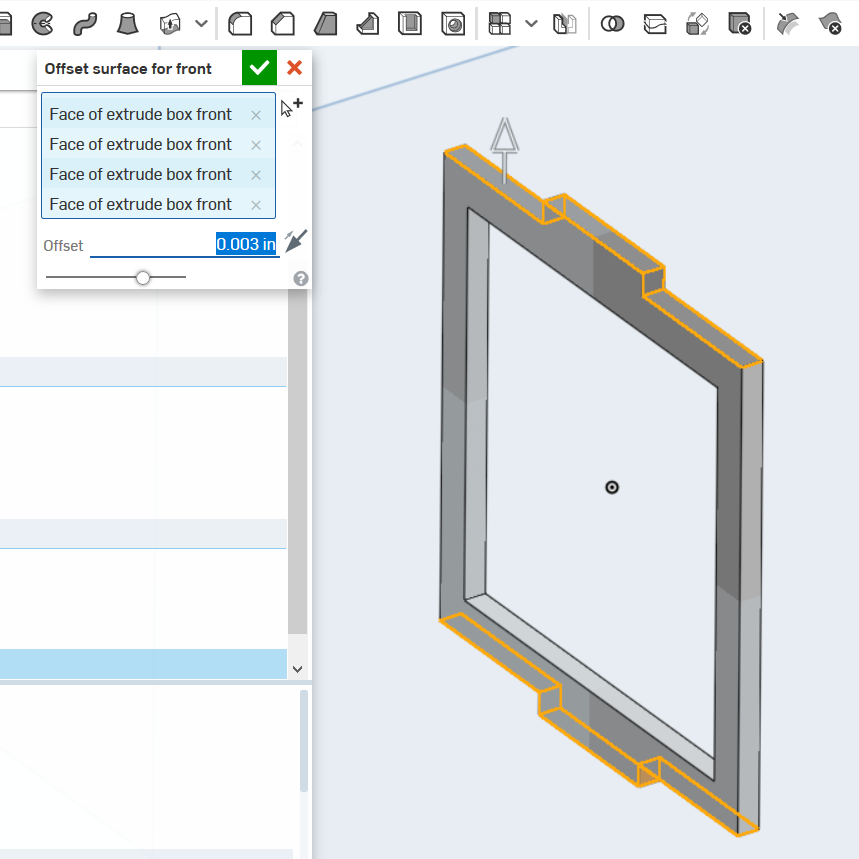
Moving the face outwards to compensate for the width of the laser.
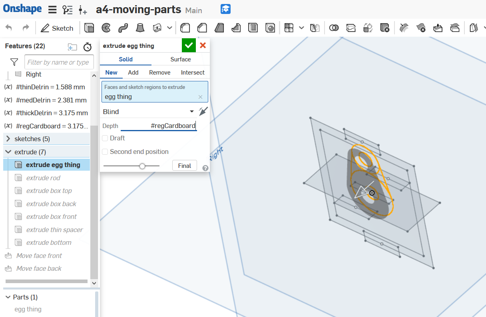
Learning to set variables in Onshape.

Double-checking if the slot on the top of the box is wide enough.
Iterations and Life Lessons
Long story short, I designed my first model on material I wasn't sure I would have access to, and then went back to resign for 1/8" material as a backup since I had cardboard that width. Without that spacer, I wouldn't be able to make my mechanism rotate a full 360 degrees.Pro tip: Don't design for something you don't have.
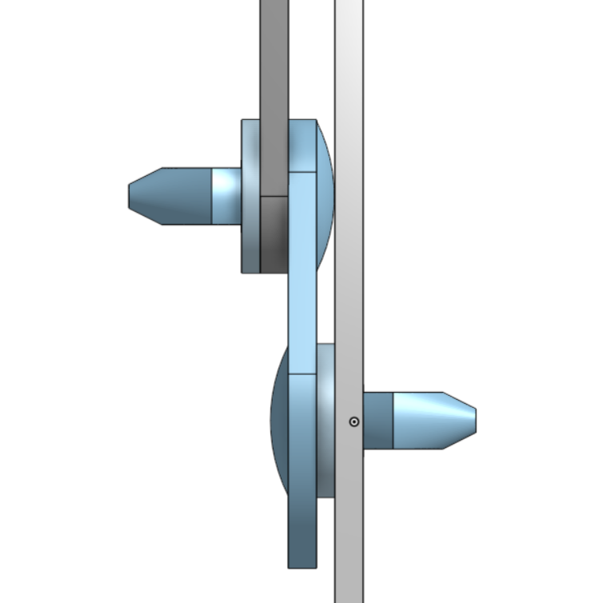
Version 1 had thin spacers in the rivets.
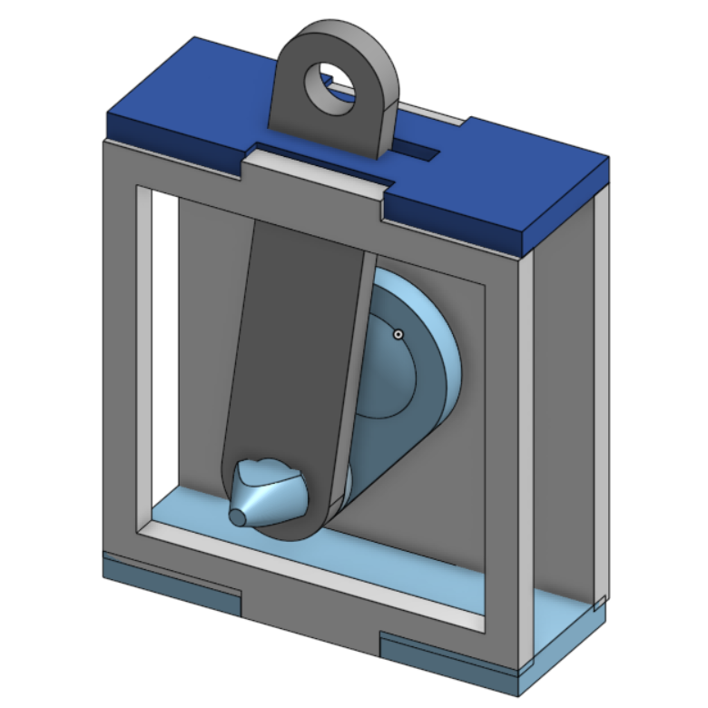
Version 1 of my design, before I redesigned it for a thicker material.
Version 2
After that, I went back to the drawing board and made some revisions to my design, including a lot of organizational improvements. I put the thicknesses of the material into variables so I could more easily account for different materials as needed.
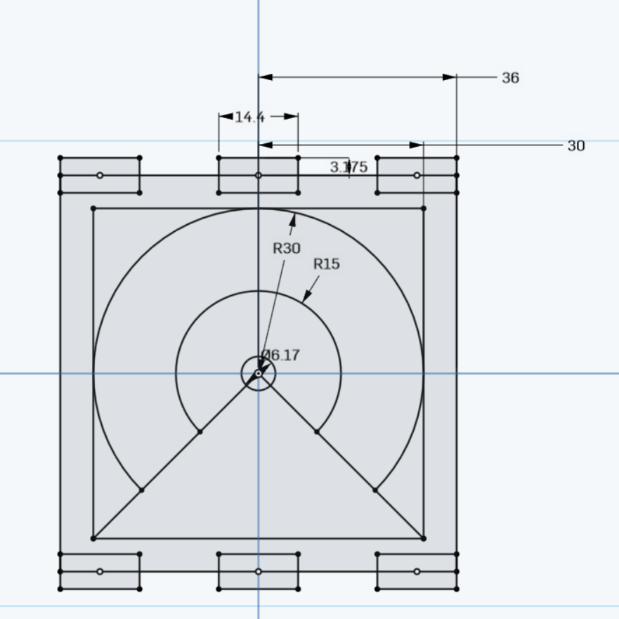
Using dimensions made it really simple to make revisions to the design.
Laser-cutting Delrin
On Tuesday, I finally got ahold of the delrin! But first, I prototyped in cardboard and quickly realized that the design was far too small. I forgot to account for the cap of the rivet, so if my prototype wasn't cardboard (and bendable), I wouldn't have been able to move the mechanism at all. However, I was able to quickly make changes to the dimensions of the sketches, and cut it again in cardboard in order to test a larger design.
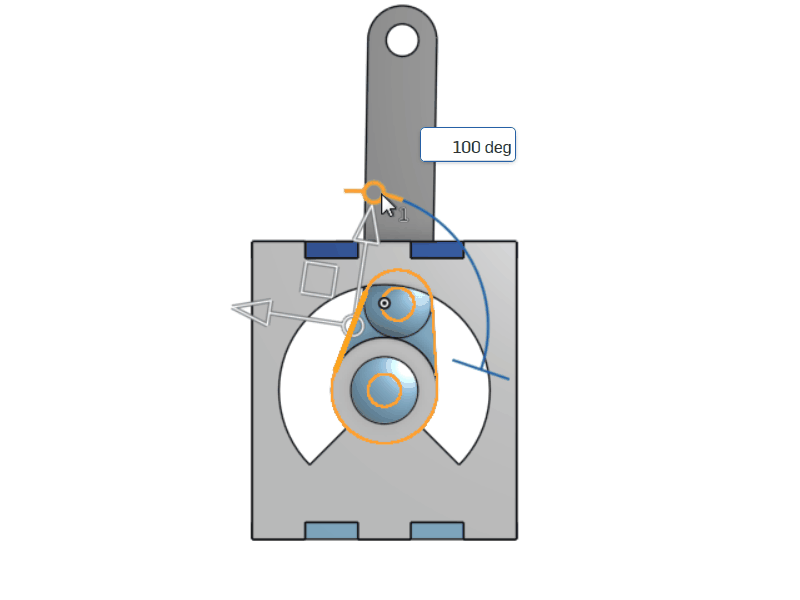
Animation of the smaller design.
Once I was happy with the final design, I cut it out in @JoshuaV's Delrin with the laser cutter settings: 5% speed, 100% power, 50% frequency.
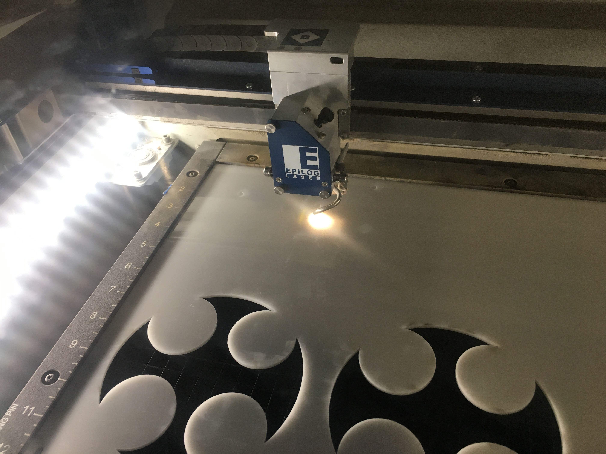
A very pretty pew pew.
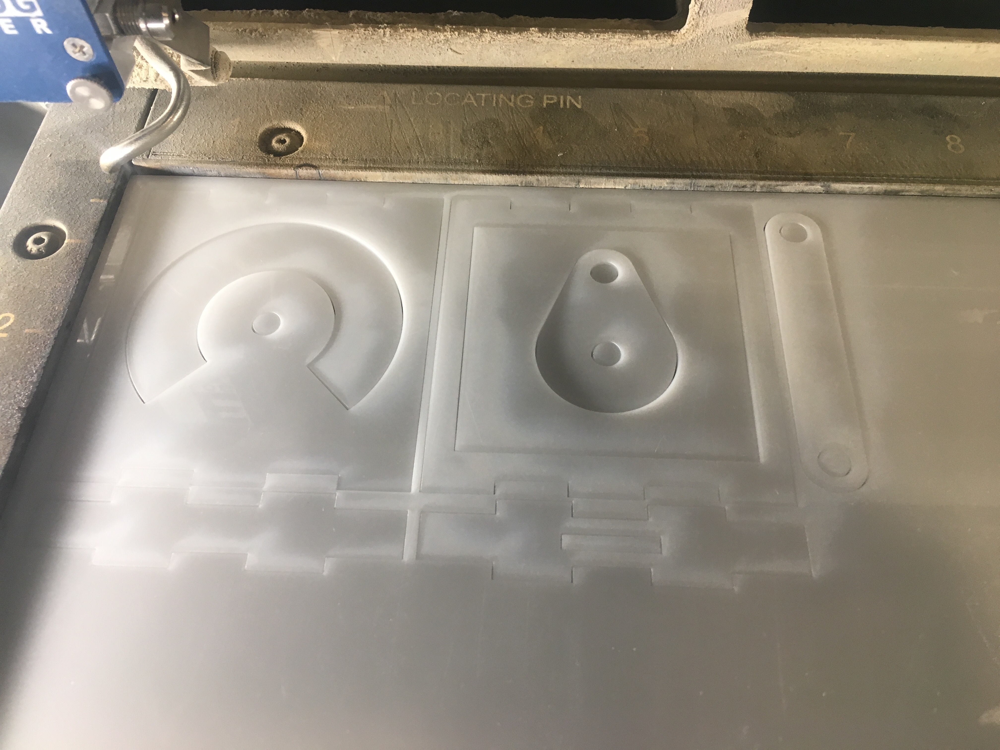
Cut out delrin is so satisfying!
Results
While this took a little longer than I expected, I learned a lot from my second round of revisions and I'm glad I was finally able to cut with the Delrin in the end. The delrin is a joy to cut and the mechanism was smooth and satisfying to play with.
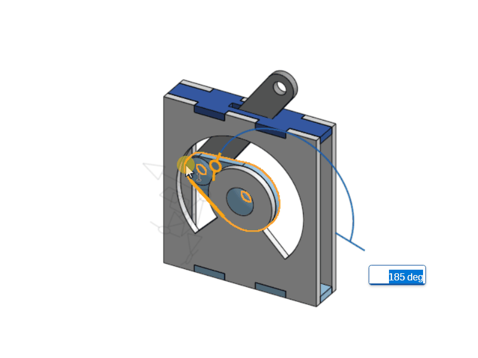
Animation of the final design in Onshape.

The final mechanism with the octopus on top.
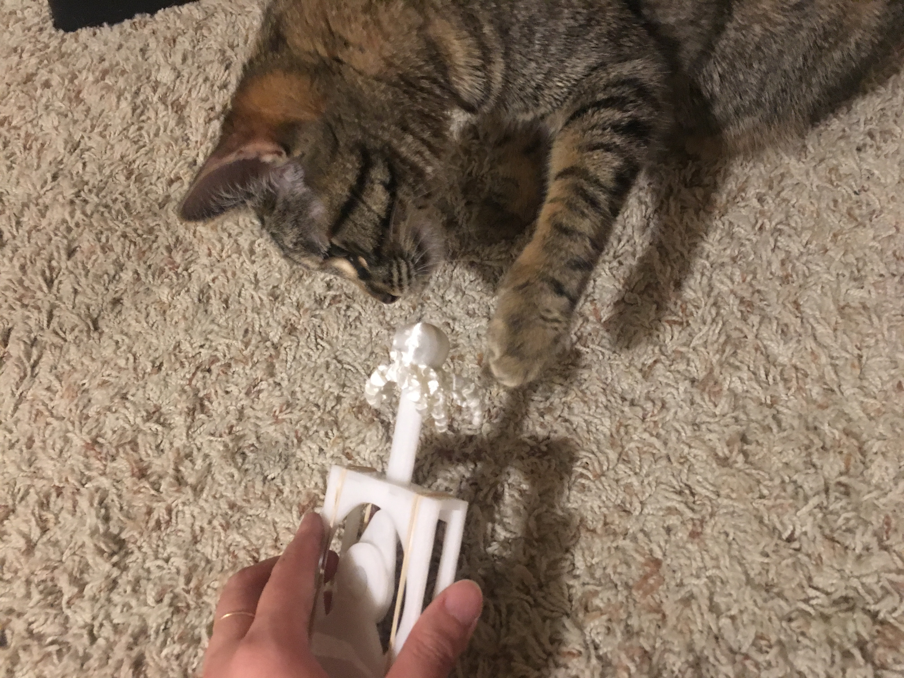
*FWIP*
3D printed octopus
- White PLA, 230 deg C.
- Fast/Low Quality
Puppet mechanism
- Delrin 1/8th inch
- Laser cutter settings: 5% speed, 100% power, 50% frequency
Source Files
- octopus.stl — Scaled octopus from Thingiverse.
- Onshape link
- Other related files
Acknowledgments
Kudos to my classmates: Emma & Ani for the cephalopod inspiration. Angel, Irina, Nicole, Julie M. Lukas, D'Marcus, Dhwani, Leo, Corynne, Peter, and the Tuesday night crew for guidance and emotional support.